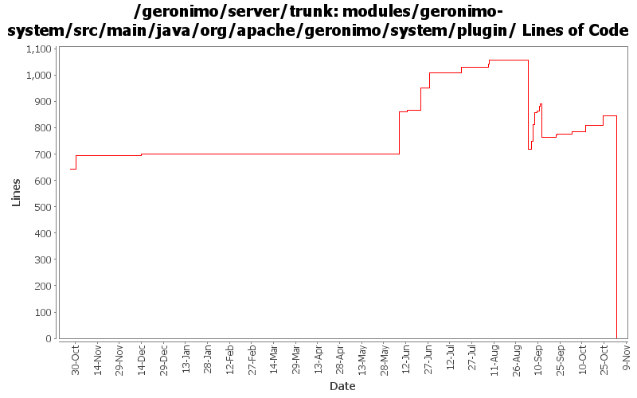

[root]/modules/geronimo-system/src/main/java/org/apache/geronimo/system/plugin

| Author | Changes | Lines of Code | Lines per Change |
|---|---|---|---|
| Totals | 73 (100.0%) | 1798 (100.0%) | 24.6 |
| djencks | 20 (27.4%) | 1093 (60.8%) | 54.6 |
| dwoods | 7 (9.6%) | 394 (21.9%) | 56.2 |
| pmcmahan | 10 (13.7%) | 263 (14.6%) | 26.3 |
| vamsic007 | 4 (5.5%) | 30 (1.7%) | 7.5 |
| jlaskowski | 2 (2.7%) | 12 (0.7%) | 6.0 |
| rickmcguire | 1 (1.4%) | 4 (0.2%) | 4.0 |
| jaydm | 1 (1.4%) | 2 (0.1%) | 2.0 |
| prasad | 10 (13.7%) | 0 (0.0%) | 0.0 |
| kevan | 16 (21.9%) | 0 (0.0%) | 0.0 |
| jdillon | 2 (2.7%) | 0 (0.0%) | 0.0 |
GERONIMO-3565. Modules distributed amongst framework/modules and plugins
0 lines of code changed in 10 files:
GERONIMO-3351 fix version resolution for snapshot dependencies
113 lines of code changed in 1 file:
GERONIMO-3496 reenable prerequisite check for plugin installation, but make the check optional via
a separate method.
39 lines of code changed in 2 files:
GERONIMO-3496 assemble servers out of plugins
68 lines of code changed in 2 files:
GERONIMO-3413 fix diagnositc message provided when a plugin cannot be installed
8 lines of code changed in 1 file:
GERONIMO-3413 promote the verifyPlugin method to the PluginInstaller interface so that the
PluginInstallerGBean can be used to determine if plugins are installable.
25 lines of code changed in 2 files:
GERONIMO-3453 Make installing xml attributes into configs.xml work. Introduce a utility class for handling the jaxb details
5 lines of code changed in 2 files:
tweak plugin snapshot resolution
24 lines of code changed in 1 file:
Clean up a lot more configs so geronimo-plugin.xml is reasonable. Make use of local maven repo more likely to work. Trim framework down to actual minimal size.
40 lines of code changed in 2 files:
update some configs to build more reasonable geronimo-plugin.xml metadata
5 lines of code changed in 1 file:
GERONIMO-3330 rename plugin schema so it doesn't conflict with what's in 2.0.1
1 lines of code changed in 1 file:
GERONIMO-3453 car-maven-plugin now updates geronimo-plugins.xml in local maven repo whenever it builds a configuration
48 lines of code changed in 1 file:
GERONIMO-3453 Add a create-pluginlist goal to aggregate all the plugin metadata into a geronimo-plugins.xml in the local maven repo
1 lines of code changed in 1 file:
GERONIMO-3330 GERONIMO-3453 More changes. Car-maven-plugin now uses same format for the plugin bits as the geronimo-plugin.xml
65 lines of code changed in 1 file:
GERONIMO-3330 GERONIMO-3453 More changes. Plugin installer now installs stuff into config.xml, config-substitutions.properties, and external_aliases.properties. Car-maven-plugin more or less gets this stuff into the geronimo-plugin.xml.
146 lines of code changed in 2 files:
GERONIMO-3330 GERONIMO-3453 Use the new plugin schema Paul came up with. Use jaxb for geronimo-plugin xml handling. Modify the car-maven-plugin to generate geronimo-plugin.xml and explicitly specify the dependencies for the plan in pom.xml. This introduces several more jaxb libraries in lib which I hope can be removed again. Also the console plugin handling is barely working.
618 lines of code changed in 2 files:
PluginInstallerGBean fails to find available artifacts when the repository URL does not end with "/".
2 lines of code changed in 1 file:
GERONIMO-3351 Plugin installer downloads a different version of dependency than the one specified
o Merging rev 563782 from branches\2.0
o A "query" for a (SNAPSHOT) version from remote repository sometimes results in a different version (call it "result"). And if result version is already in the server's repository, there is no point in downloading it again. It is resulting in an error while copying the downloaded artifact to server's repository when it already exists.
14 lines of code changed in 1 file:
GERONIMO-3385 dont prepend 'var/' and do trim source path in copy-file element
21 lines of code changed in 2 files:
GERONIMO-1265 - Preserve comments added by users in config.xml file
- Changes inspired by patch from Don Hill - Thanks Don!
2 lines of code changed in 1 file:
GERONIMO-3335 make it easy for the local maven repo to be a plugin repo
49 lines of code changed in 1 file:
GERONIMO-2757 add geronimo-versions to exported plugins. Patch submitted by Jason Warner.
6 lines of code changed in 1 file:
GERONIMO-3256 Minor logging improvements to help with debugging
65 lines of code changed in 1 file:
GERONIMO-3246 Cleanup exception handling so stack traces for first failures are not discarded.
4 lines of code changed in 1 file:
GERONIMO-2757 Enhance plugin schema to allow for multiple versions of a plugin - Part 2
136 lines of code changed in 2 files:
GERONIMO-3242 Version not considered during dependency resolution for plugins
o Added a check if the version specified is there in the available versions then download that
o Thanks Manu for supplying the patch
6 lines of code changed in 1 file:
GERONIMO-2994 PluginInstallerGBean patch to use maven-metadata-local.xml files from local builds.
10 lines of code changed in 1 file:
GERONIMO-2757 Enhance plugin schema to allow for multiple versions of a plugin - Part 1. Also updated geronimo-plugin.xml files for the configs to point to the 2.0 repo.
182 lines of code changed in 2 files:
GERONIMO-2605 NPE if exporting plugin for module having dependency on module with no groupId
1 lines of code changed in 1 file:
GERONIMO-2735 Property substitution in config.xml, using jexl expressions. Small example in the jetty config.xml
2 lines of code changed in 1 file:
GERONIMO-2551 Plugin hits NPE if maven-metadata listed artifact doesn't exist or JAR artifact maven-metadata doesn't exist
o Applied the patch provided by Donald Woods. Thanks Donald!
o Check for null file handle, PluginMetadata and log appropriate messages.
8 lines of code changed in 1 file:
GERONIMO-2537 Update the src headers in server/trunk/modules to be compliant with the new ASF src header and copyright policy (http://www.apache.org/legal/src-headers.html). I also did some cleanup of the src headers and tried to make them all a consistent format
0 lines of code changed in 16 files:
Partial fix for GERONIMO-2537 All Geronimo source files must be brought in line with the new ASF source header and copyright notice policy
The modules directory is supposed to be migrated. There're some issues with some files, but they'll be handled manually
12 lines of code changed in 2 files:
improve snapshot support for plugins
11 lines of code changed in 1 file:
GERONIMO-2521 add support for maven2 style snapshot download URLs to plugin installer gbean
61 lines of code changed in 2 files:
(GERONIMO-2525) Allow mixed content in attributes
0 lines of code changed in 2 files: